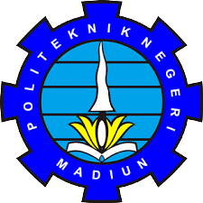

Jalan Serayu Nomor 84 Madiun Kode Pos 63133
Telepon +62 351 452970 Faksimile +62 351 452960
Laman: www.pnm.ac.id Surel: sekretariat@pnm.ac.id
KARTU RENCANA STUDI (KRS)
SEMESTER GENAP
TAHUN AKADEMIK 2022/2023
Nama Mahasiswa : Ficko Daniar Fachryza Putra
NIM : 253307043
Jurusan : Teknik
Program Studi : Teknologi Informasi
| No | Kode MK | Mata Kuliah | SKS | Kelas | Dosen Pengampu |
|---|---|---|---|---|---|
| 1 | MKU2201 | Agama Islam | 2 | 2B | Dr. Nanik Nurhayati, S.Ag., M.Pd. |
| 2 | TI22202 | Pemrograman Mobile 1 | 2 | 2B | Sigit Kariyadi Bimonoagoro, S.Kom., M.T. |
| 3 | TI22203 | Praktik Pemrograman Mobile 1 | 2 | 2B | Sigit Kariyadi Bimonoagoro, S.Kom., M.T. |
| 4 | TI22204 | Manajemen Resiko Proyek | 2 | 2B | Lutfiyah Dwi Setia, S.Kom., M.Kom. |
| 5 | TI22205 | Pemrograman Berbasis Obyek | 2 | 2B | Ikhwan Badiolwi Sumafa, S.Kom., M.Kom. |
| 6 | TI22206 | Praktik Pemrograman Berbasis Obyek | 2 | 2B | Ikhwan Badiolwi Sumafa, S.Kom., M.Kom. |
| 7 | TI22207 | Desain & Pemrograman Web | 2 | 2B | Ardian Prima Atmaja, S.Kom., M.Cs. |
| 8 | TI22208 | Praktik Desain & Pemrograman Web | 2 | 2B | Ardian Prima Atmaja, S.Kom., M.Cs. |
| 9 | TI22209 | Sistem Operasi | 2 | 2B | Hendrik Kusbandono, S.Kom., M.Kom. |
| 10 | TI22210 | Praktik Sistem Operasi | 2 | 2B | Hendrik Kusbandono, S.Kom., M.Kom. |
| Jumlah | 20 | ||||